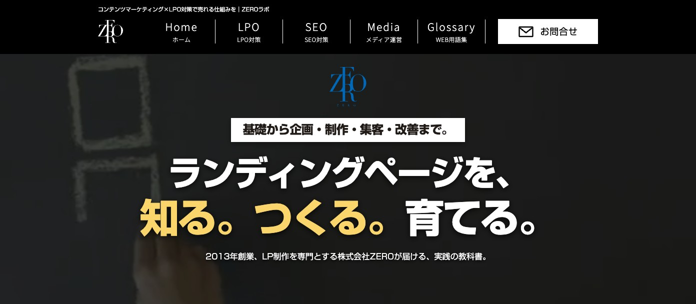

ZERO LABO / FIRST VIEW DESIGN
メインビジュアル 3案
ZEROのLPと同じ動く背景を使った比較です。A案は選定後の修正版で、3つの枠を外し、メイン画像を短くしました。各案を開くと、実際の動きとPC・スマホのレイアウトを確認できます。
デザイン参照：ZEROのLP ↗
ZERO LABO / FIRST VIEW DESIGN
ZEROのLPと同じ動く背景を使った比較です。A案は選定後の修正版で、3つの枠を外し、メイン画像を短くしました。各案を開くと、実際の動きとPC・スマホのレイアウトを確認できます。
デザイン参照：ZEROのLP ↗